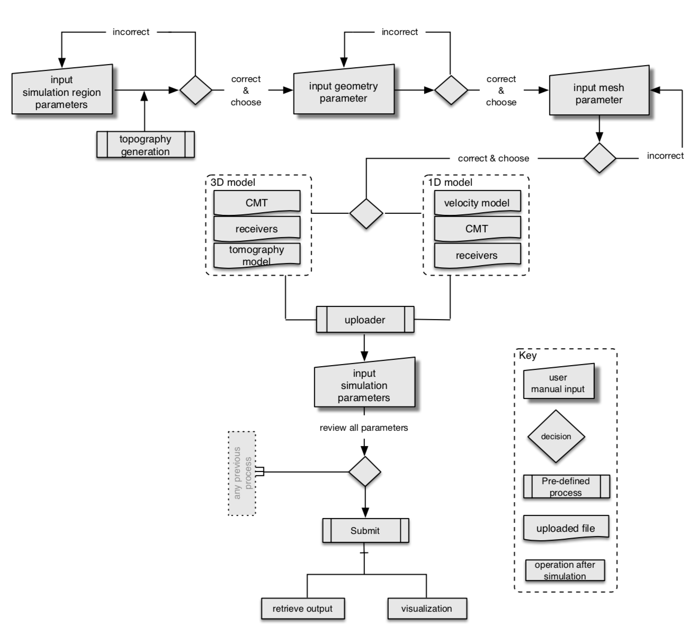
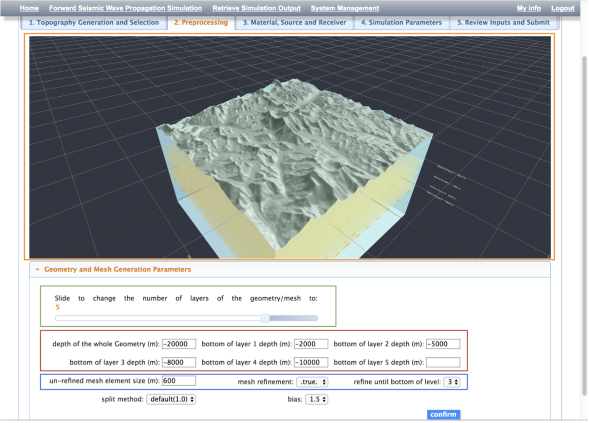
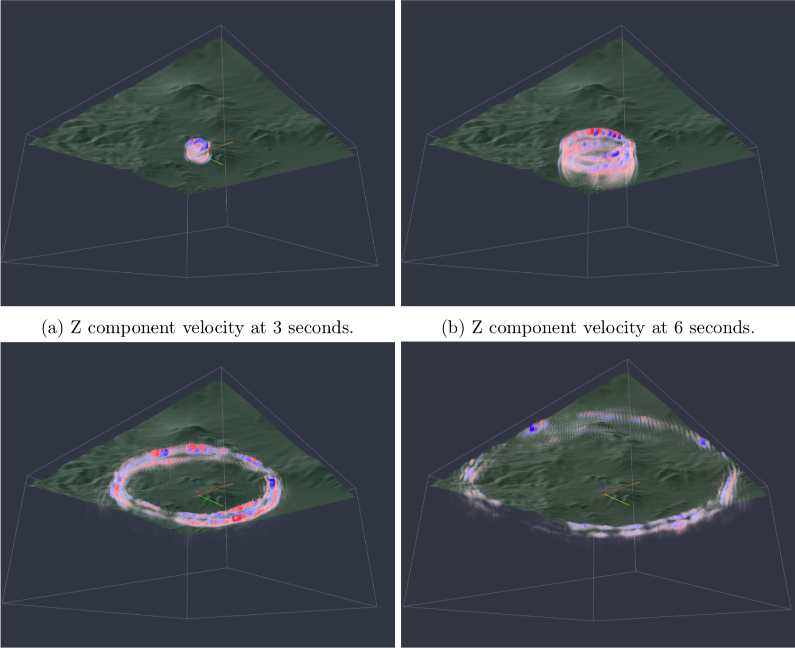

Numerical simulation of 3D seismic wave propagation is an important tool for earthquake studies. However, developing the numerical schemes for solving the partial differential equations is not the only difficult part. The data acquisition, preprocessing, mesh generation, visualization etc, relies on various tools and expert-level knowledges, which potentially formed an invisible obstacle for the researchers to carry out the simulation for studying realistic earthquakes. In this blog, I would like to briefly demonstrate some aspects of an integrated web and HPC based 3D wave propagation simulation environment.
In order to significantly simplify the user taskflow, an automated processing pipeline from data acquisition, model generation to the simulation on the server side is developed (which is another topic maybe I will cover in another blog).
In addition, it featured an WYSIWYW environment for realtime visualization for some steps in both preprocessing and postprocessing (an OpenGL ES 2.0 capable GPU is required). The figure below illustrates an user interface for building earth model at the user given region.
From the user perspective, once the simulation is finished, they can download the simulation results, or if needed, the 3D results can also be interactively visualized as illustrated below.
Some of the simulation codes in geophysics community would require multiple computing nodes (might be up to few hundreds of nodes) for a physically meanful simulation. However, unlike simulation itself, for preprocessing and postprocessing, the computational cost is not very high but would require fast processing for realtime or near-realtime user ineraction, the slurm queueing time hence should be avoided, how to implement this in a complete architecture might be too complicated and we will not discuss here, as it might beyond the scope of this blog.
Integrated web-based simulation environment (e-science) development was a popular research topic amoung some computationally oriented community few years ago. I know that there was an EU funded research project worked by 3-4 universities, aims at delivering a similar solution for earthquake simulation, and there might be another project from Caltech. Science and technology keep envolving, and it seems many spotlight gradually moved away from e-science topics to some other more popular fields nowadays (such as deep learning), still, I hope more e-science projects can emerge and get continuous development to facilitate different research disciplines.
Created by Cong in 2020.